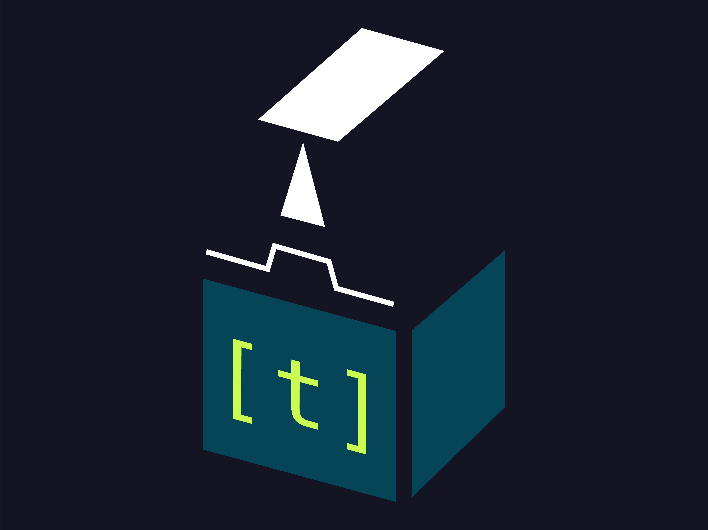
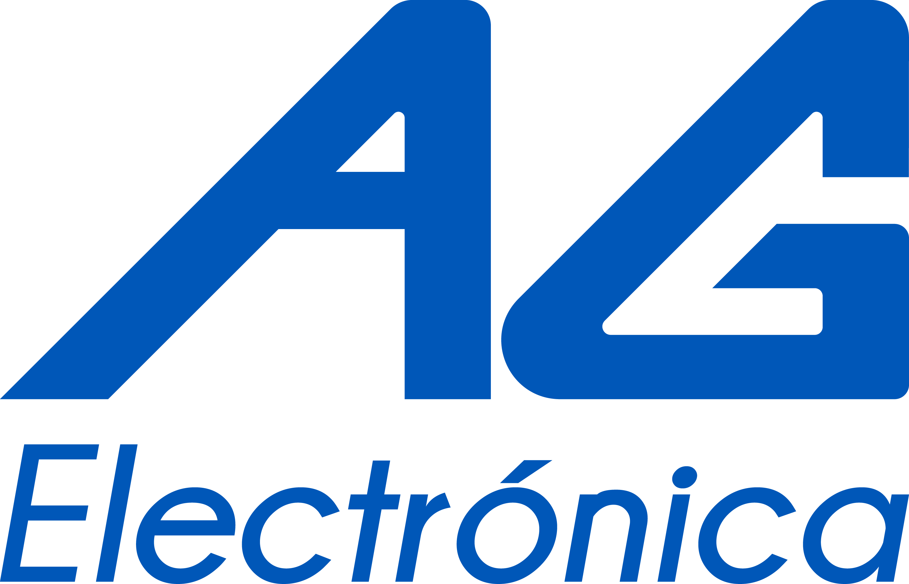
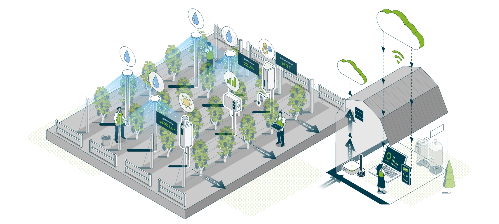
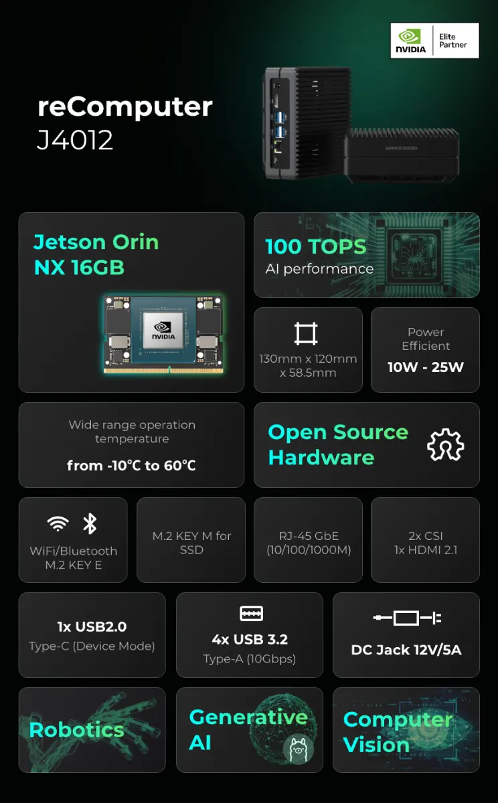
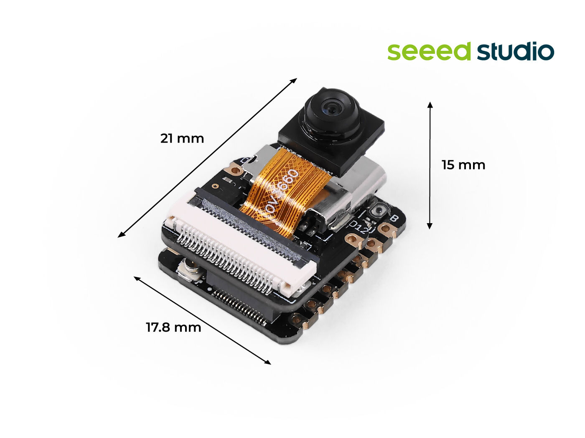
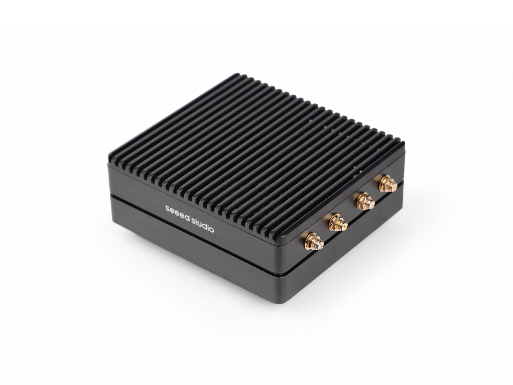
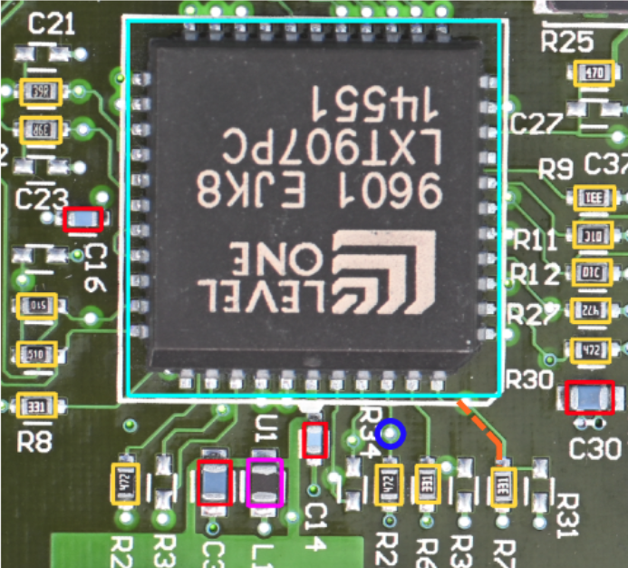
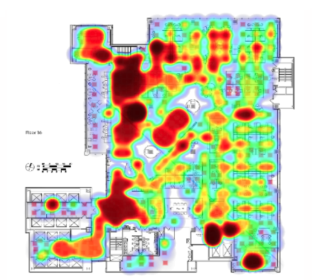
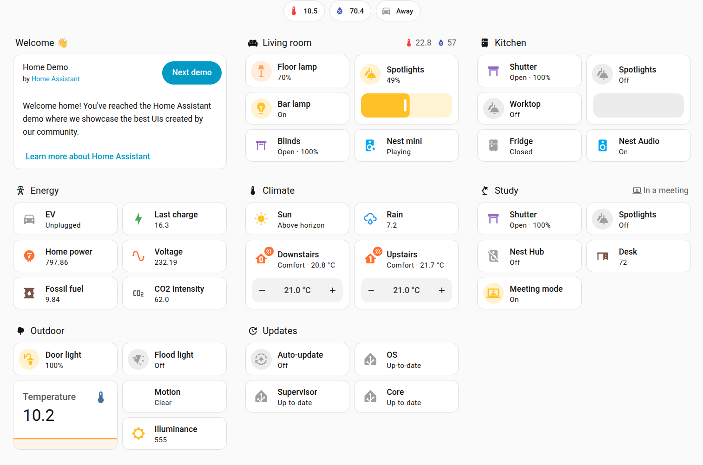

Durante una década, "hacer IA" significó subir todo a la nube o tener hardware muy costoso. Hoy hay otra opción: procesar los datos exactamente donde se generan.
Vamos a comparar las dos arquitecturas, entender qué hace posible la IA en el borde y dónde se está usando hoy mismo.
Cómo funciona, qué resuelve y dónde empieza a fallar.
Qué es, qué implica y por qué importa ahora.
Hardware especializado y trucos de software para modelos compactos.
Industria, espacios inteligentes y hogares.
El modelo dominante durante la última década. Entendamos cómo funciona y dónde empieza a romperse.
Para una recomendación de Netflix da igual.
Para un brazo robótico, un coche autónomo o una alarma de seguridad, es la diferencia entre reaccionar y llegar tarde.
Procesar los datos cerca de donde se generan, en lugar de mandarlos a la otra parte del mundo.

El "borde" es cualquier dispositivo local: una cámara, un sensor, un teléfono, una Raspberry Pi, NVIDIA Jetson, un microcontrolador. La inferencia ocurre ahí mismo. Los datos crudos no salen del dispositivo.
Cámara, sensor, teléfono, microcontrolador, gateway industrial.
El modelo corre en el dispositivo que captura el dato o muy cercano a el.
Los datos crudos nunca salen del edificio.

| criterio | [ nube ] | [ borde ] |
|---|---|---|
| latencia | 100 – 500 ms · round-trip | < 15 ms · local |
| internet | obligatorio | opcional · puede funcionar offline |
| privacidad | los datos crudos salen del sitio | los datos crudos nunca salen |
| costo | recurrente · por inferencia y ancho de banda | capex inicial · operación marginal |
| cómputo disponible | prácticamente ilimitado | limitado al hardware local |
| tamaño de modelo | cientos de GB · LLMs grandes | MB – pocos GB · modelos optimizados |
| resiliencia | cae si cae internet o el proveedor | sigue operando aislado |
Sin viaje al data center. El sensor decide en tiempo real.
El sistema sigue operando si cae la red, el proveedor o el enlace WAN.
Si solo se requiere que el sistema detone alertas o analíticos, el dato original ni siquiera tiene que almacenarse.
Memoria, cómputo y energía son escasos. Hay que optimizar los modelos.
La IA en el borde tenía demasiados retos a solucionar hace 5 años, ha habido mucha investigación que ahora permite realizar cosas antes inimaginables.

Microcontrolador del tamaño de un pulgar, con cámara y micrófono. Corre visión y wake-words con TensorFlow Lite Micro.

Mini-PC con módulo NVIDIA Jetson integrado. Visión en tiempo real, modelos de varios GB, hasta 100 TOPS en una caja sellada.
Reducir la precisión de los pesos del modelo. Menos bits → menos memoria → más rápido.
Eliminar las conexiones de la red que casi no aportan. La red se vuelve más esparcida y más liviana.
Dónde se está desplegando IA en el borde, hoy mismo.

Las plantas no pueden esperar 250 ms a un data center. Una línea de producción decide en milisegundos.
Sensores de vibración, corriente o temperatura corren modelos locales. Una desviación dispara la alerta antes de que la línea se detenga.
Cámaras inspeccionan cada pieza en la banda. Defectos detectados al instante; el rechazo es físico, no un reporte de la próxima semana.
El gateway escucha el motor 24/7. Cuando el sonido sea diferente, agenda servicio antes del paro forzado.

Un edificio que ve y entiende a las personas, sin que un solo fotograma de video salga de él.
Cámaras locales cuentan personas, miden permanencia y mapean recorridos. Sólo los números agregados salen del dispositivo.
Detección de eventos sospechosos directamente en la cámara. El video crudo nunca se sube, sólo el evento si lo hay.
Iluminación y HVAC reaccionan a presencia y actividad real, no a horarios fijos. Consumo energético baja de forma medible.

El movimiento self-hosted: Home Assistant, ESPHome, asistentes locales, permiten crear infraestructuras completas en tu casa
Wake-word, transcripción y comandos corren en hardware como el XIAO ESP32-S3 Sense. Tu voz no se sube a ningún servidor.
Las rutinas se ejecutan en el hub local. Si internet cae, las luces, persianas y termostato siguen respondiendo.
Si la marca cierra el servicio o cambia los términos, tu casa sigue funcionando. La inteligencia es tuya, no rentada.